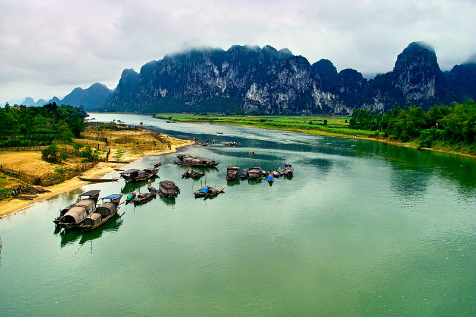
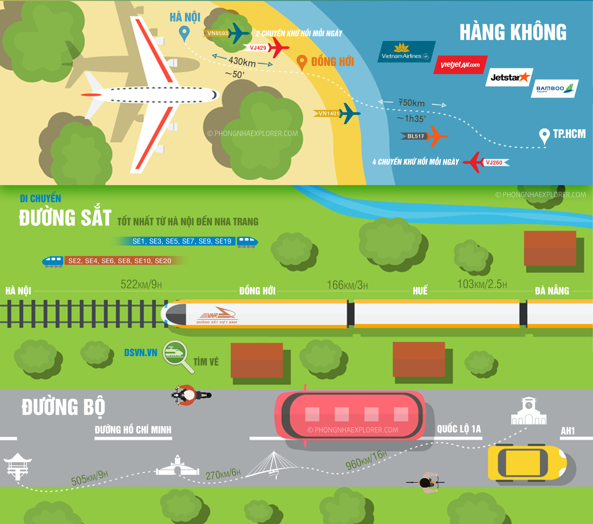
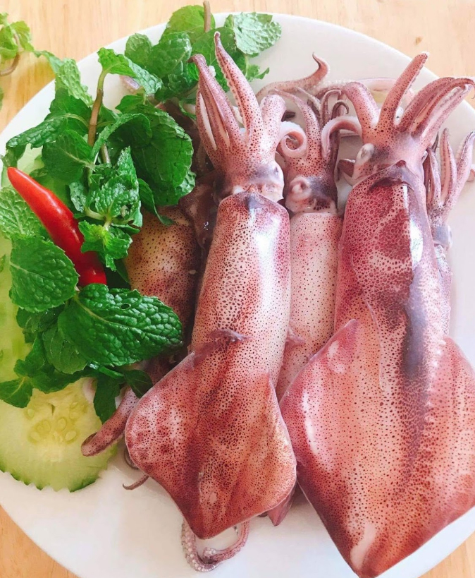
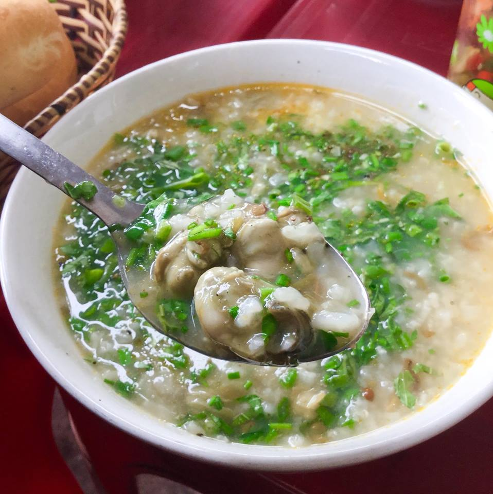
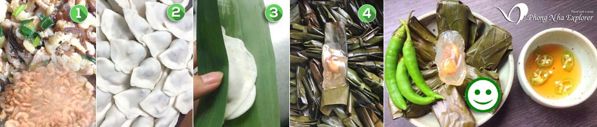
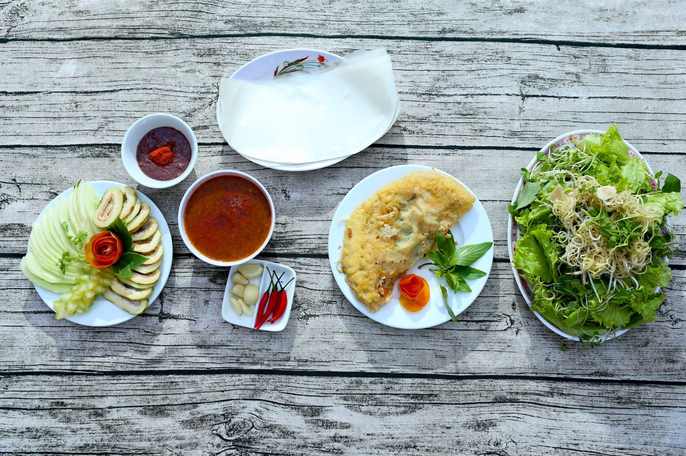
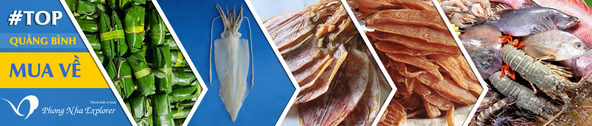

Cẩm nang du lịch Quảng Bình
"Du khách lần đầu đến với Quảng Bình chắc hẳn sẽ còn bỡ ngỡ, lo lắng lịch trình đi lại, phương tiện di chuyển, nơi ăn, chốn ở, chi phí hoạt động... Hiểu được điều đó, QuangBinh Travel đã giúp bạn chọn lọc và liệt kê lịch trình gợi ý chi tiết, vừa trải nghiệm thiên nhiên và cũng vừa an toàn. Cùng nhau tham khảo tại đây nhé!”
Quý khách cần đặt tour hoặc tư vấn thêm xin vui lòng liên hệ Hotline:0123456789
1.Du lịch Quảng Bình có gì?
Hiếm có nơi nào ở Việt Nam lại tập trung nhiều danh lam thắng cảnh đẹp và địa hình đa dạng như Quảng Bình. Không chỉ nổi tiếng bởi các hang động kỳ vĩ ở vườn quốc gia Phong Nha Kẻ Bàng. Quảng Bình còn có các bãi biển hoang sơ như: biển Nhật Lệ, biển Đá Nhảy, biển Bảo Ninh… có hệ thống sông suối kết hợp với núi đá vôi tạo ra màu xanh ngọc bích lạ kỳ tại suối Nước Moọc hay Sông Chày. Mỗi địa điểm đều mang đến cho quý khách những trải nghiệm rất khác biệt.
Ngoài ra Quảng Bình còn có các di tích lịch sử, điểm du lịch tâm linh hấp dẫn: Vũng Chùa, Đền Thờ Thánh Mẫu Liễu Hạnh, Chùa Hoằng Phúc.
2. Đến Quảng Bình bằng phương tiện gì?
Bạn đang thắc mắc nên đến đây bằng tàu hỏa, bằng máy bay hay bằng ô tô thì hợp lý và tiết kiệm, cũng tùy bạn ở đâu. Vị trí xuất phát của bạn ảnh hưởng rất nhiều đến việc lựa chọn đường đến Quảng Bình, hãy định hướng cung đường của bạn trước khi xách ba lô.
Chúng tôi xin đề xuất các phương án di chuyển hợp lý nhất nên chọn bên dưới,
3. Du lịch Quảng Bình nên đi vào tháng mấy?
Quảng Bình cũng như những nơi khác thuộc miền Trung, cũng có hai mùa rõ rệt mùa khô từ tháng 4 đến tháng 8 và mùa mưa từ tháng 9 đến tháng 3 năm sau. Thời gian mưa tập trung vào các tháng 9, 10 và 11. Đặc biệt là tránh bão, những cơn bão đi vào Quảng Bình thường tập trung nhiều nhất vào tháng 10 bạn cần xem dự báo thời tiết, nhiệt độ trước để lên lịch trình và chuẩn bị trang phục hợp lý .
Mỗi mùa sẽ có những cảnh sắc thiên nhiên đặc trưng khác nhau. Nếu bạn muốn tắm biển và tận hưởng trọn vẹn vẻ đẹp của dải đất hẹp nhất Việt Nam mà không phải bận tâm vì thời tiết, thì khoảng thời gian mùa hè giữa tháng 3 đến cuối tháng 8 là thời điểm lý tưởng nhất. Lúc này Quảng Bình trời nắng nóng nhưng diện tích với phần lớn là biển cũng giúp khí hậu có phần mát mẻ hơn. Bạn nên chuẩn bị áo chống nắng, kem chống nắng, mũ, kính mát….
Mùa mưa cũng chính là mùa đông ở Quảng Bình. Mưa thường kéo dài từ tháng 9 đến tháng 11, tới tháng 12 đến tháng 3 trời bắt đầu vào đông và lập xuân lúc này nhiệt độ mát mẻ, đôi khi có không khí lạnh tràn về. Bạn nên chuẩn bị áo ấm, dù, ô… Khoảng thời gian này các điểm tham quan không bị quá tải và xô bồ, nhộn nhịp như mùa hè, thường có các chương trình khuyến mãi, giảm giá…

Đặc biệt, có những lễ hội đặc sắc ở Quảng Bình các bạn có thể đi vào dịp này để hòa mình vào không khí sôi nổi của các lễ hội:
4. Du lịch Quảng Bình nên ăn gì?
Du lịch Quảng Bình nên thưởng thức các loại hải sản tươi sống được bày bán rất nhiều ở đường Trương Pháp, ăn các món địa phương như Bánh lọc, Bánh xèo, miến Lươn, cháo Hàu và không nên bỏ qua Lẩu Cá Khoai, xin chia sẻ đến các bạn một số kinh nghiệm ăn uống ở quảng bình và các món ăn mang đậm nét ẩm thực Quảng Bình không nên bỏ qua
Rất nhiều các loại hải sản tươi sống như tôm, cá, ngao, ốc…nướng, hấp, luộc để bạn có thể tha hồ lựa chọn tại các nhà hàng, quán ăn vỉa hè bên bờ biển Nhật Lệ, biển Bảo Ninh, biển Quang Phú.
Đặc biệt mực ở Quảng Bình được đánh giá là ngon nhất Việt Nam mực rất dày và ngọt do vùng biển Quảng Bình có độ mặn cao. Bạn đừng quên thưởng thức các món chế biến từ mực như: mực nướng, mực hấp, mực một nắng, mực chiên xù, mực bóp xoài chua ngọt…Người dân Quảng Bình rất hiền lành và mến khách, không có hiện tượng chặt chém nên hoàn toàn yên tâm.
Có thể bạn sẽ bất ngờ khi hình dung món này qua tên gọi vì nó không được nấu bằng hạt gạo như các loại cháo khác mà nó được chế biến từ bột gạo hoặc bột mì trộn dẻo rồi dát mỏng và cắt thành sợi sau đó nấu chung với tôm, sườn heo non, cá hoặc cua. Người dân Quảng Bình vẫn thường gọi món ăn này là Cháo Canh, cũng như phở Bắc hay bún Huế, món này cũng có phụ kiện kèm theo là Ram, ở các nơi khác thường gọi là Nem tuy nhiên về Quảng Bình bạn gọi là Nem thì sẽ được phục vụ món Nem Chả gói trong lá chuối chứ không phải là Ram.

Cháo hàu được chế biến từ con hàu lấy từ sông Nhật Lệ. Hàu được xào um sẵn với gia vị như hành, ớt, tiêu cùng muối để cho thấm. Khi có khách gọi món này thì chủ quán chỉ việc lấy hàu đã làm cho vào cháo gạo đã nấu ở nồi khác đun ít lửa là sẽ có một tô cháo thơm, ngọt ngào. Tại thành phố Đồng Hới bạn có thể ăn tại quán Thùy Dương hay Chị Ngạnh ngoài đặc sản cháo hàu sữa còn có thêm món lươn đồng củng rất ngon. Nếu muốn thưởng thức tô cháo hàu ngon đúng vị bạn phải đến các quán tại thị trấn Quán Hàu cách thành phố Đồng Hới chừng 7km về phía Nam dọc theo Quốc lộ 1A.
Cháo lươn được chế biến từ lươn đồng nên đảm bảo độ tươi, béo vàng, thịt dai, vị ngọt sau khi tẩm ướt gia vị vào thịt không bị nát, còn nguyên dạng. Khi ăn thì ngọt, mềm có vị cay của nén, ớt, tiêu và một chút màu óng ánh vàng của nghệ. Tất cả như hòa quyện với nhau khiến thực khách ăn vào khó quên. Ngoài cháo lươn, các quán còn có thêm món súp lươn, miến lươn, miến xào lươn…

Bánh bột lọc là một sản phẩm ẩm thực bạn không nên bỏ qua khi đã đến Quảng Bình, bánh bột lọc có 2 loại mà người dân nơi đây thường gọi là bánh lọc lá hoặc bánh lọc trần.
Bánh khoái Quảng Bình thoạt nhìn có nhiều nét giống với bánh xèo miền Nam hay bánh gối của miền Bắc, nhưng hương vị của nó rất khác biệt. Khi thưởng thức món bánh khoái Quảng Bình, du khách sẽ cảm nhận được sự nóng hổi hòa quyện với mùi thơm của gạo, mát dịu của rau sống, vị béo ngậy của tôm, thịt và vị đậm đà của hương vị nước chấm gan heo, đậu lạc. Trong các quán thì bánh khoái Tứ Quý là quán lâu đời và nổi tiếng nhất.
5. Du lịch Quảng Bình mua gì về làm quà
Bánh lọc, rất nhiều du khách đã chọn mua bánh lọc sống về làm quà cho người thân, gia đình và bạn bè.
Giá bánh lọc chưa hấp mua sỉ khoảng 1.700 đồng mỗi cái, bảo quản lạnh khoảng 3 ngày, khi về đến nhà bạn chỉ cần hấp cách thủy và thêm chén nước mắm kèm theo chút ớt thái mỏng là có thể thưởng thức đặc sản Quảng Bình ngay tại nhà.
Ngoài bánh lọc bạn có thể mua bánh tráng Tân An, khoai deo, nước mắm Bảo Ninh, Sâm Bố Chính, Rượu Võ Xá, Dầu Lạc Phong Nha, Mật Ong…. Đây đều là những sản phẩm của các làng nghề truyền thống nổi tiếng của địa phương. Các loại hải sản tươi khô như mực khô, mực một nắng, các loại hải sản tươi sống như Tôm, cua, cá, ghẹ, mực bảo quản trong thùng xốp củng là những món quà ý nghĩa dành tặng cho người thân, bạn bè.